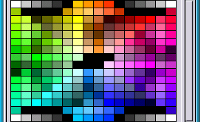
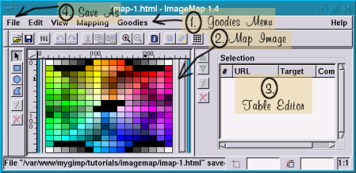
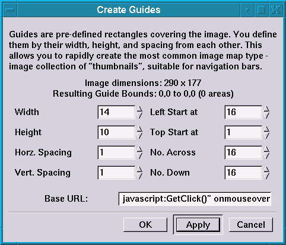
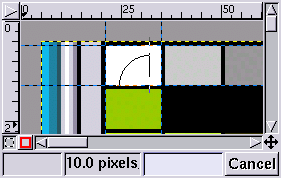
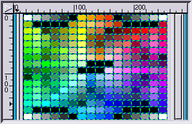

 
In my opinion, it is hard to come up with a good application for an image map. For many online applications, it is simply overkill. However, to emulate the behavior of a GIMP Dialog seems to be a perfect place for this powerful web tool.
The image to the left comes from a previous tutorial about how to use perlotine. The tutorial slices this image further, but since The GIMP Image Map Plug-in and image maps in general use coordinates, we can use a less complicated table for this.
Above is a screenshot of The GIMP Image Map Plug-in, it has been scaled down for a nicer page. It can be somewhat scary at first. I tried to arrow and number the few areas I am worried about for this tutorial. So, relax.
 
This is a screenshot of the Create Guides Dialog (left image). We get to change every single option before we are done. Whee!
I came to this tutorial prepared with a perfectly wonderful colorpicker script that I stole from Victor S. Engel. The only problem with his colorpicker is that it didn't look like The GIMP. :) If you "View Source" of that page, you can see that there is a similar line to each image map coordinate area. So, into the "Base URL" box, put the stuff that will be the same on each. I am going to deal with the colors (256 of them, eek!) after I make the image map. So, put javascript:GetClick()" onmouseover="GetColor(' into the bottom box. The Image Map Plug-in will put the href=" into the html for you.
Once I started to write this tutorial, I discovered that the Image Map Plug-in has the ability to do the zooming and such. Too late, for me, I guess as I used The GIMPs tools for measuring to determine the information for the rest of the Create Guides information. The original image was still open, so it was hard not to think about using it. Here is a screen shot of View->Zoom->4:1
I used The GIMPs nifty measure tool to determine that the rectangles are all 10 pixels tall and 14 pixels wide. The black lines in between are only one pixel wide also.
You can do the math or count the squares, but the Visibone2 palette has 16 colors across and 16 colors down. I used the mouse on guides to determine the start point of the first image map area. That is all of the configurable things in this dialog. Time to click "Apply".

Once you hit "Apply" the guides will draw themselves on the image map preview window. You can see if you hit the right places on your image. This tutorial certainly makes it look like I got it right the first time ;)
At this point, for this project, you can jump right to "4. File Save"as it is totally done for our use.

Since 256 elements is way to much to edit by hand, so I ended up using a different way to finish the information at each point. However, I played with the editor a bit. It was easy to use and figure out. Highlight the text in the pictured portion of the Image Map Dialog area by clicking on the area in the image preview. (shown above). Honestly, I don't have that much experience with html renderers, if you have the experience and would like to fill this portion of the tutorial in with something smart about editing your image map elements, feel free. I fully admit that I only used a small small part of this great plug-ins ability. 256 elements was out of the reach of my short attention span.
I am not going to bore you with the directions to File->Save As. Instead, check out my product here. It needs the colors placed at the end of the lines. This information is already found in The GIMP Palette directory, usually located at ~.gimp-1.2/palettes/. This was the Visibone2 palette. I posed this problem to my friend bex and went to sleep. When I awoke, she had solved my dilemma by writing the bextruder shell script.
This puppy takes each line from Visibone2.txt, gets a color from the Visibone2 in your home directory and puts it on the end of the line. Then plops a ')> on the end of that, producing a file called visibone.html. This didn't work. bex did exactly what I told her to do and I had forgotten a ". The plop at the end should have been a ')">. It was easy enough to fix with any editors global replace thingie .... My "working chunk of html" is called bexcolored.html. The script should be easy to edit to use any palette. That is why I brought up the missing".
The original tutorial can be found here.